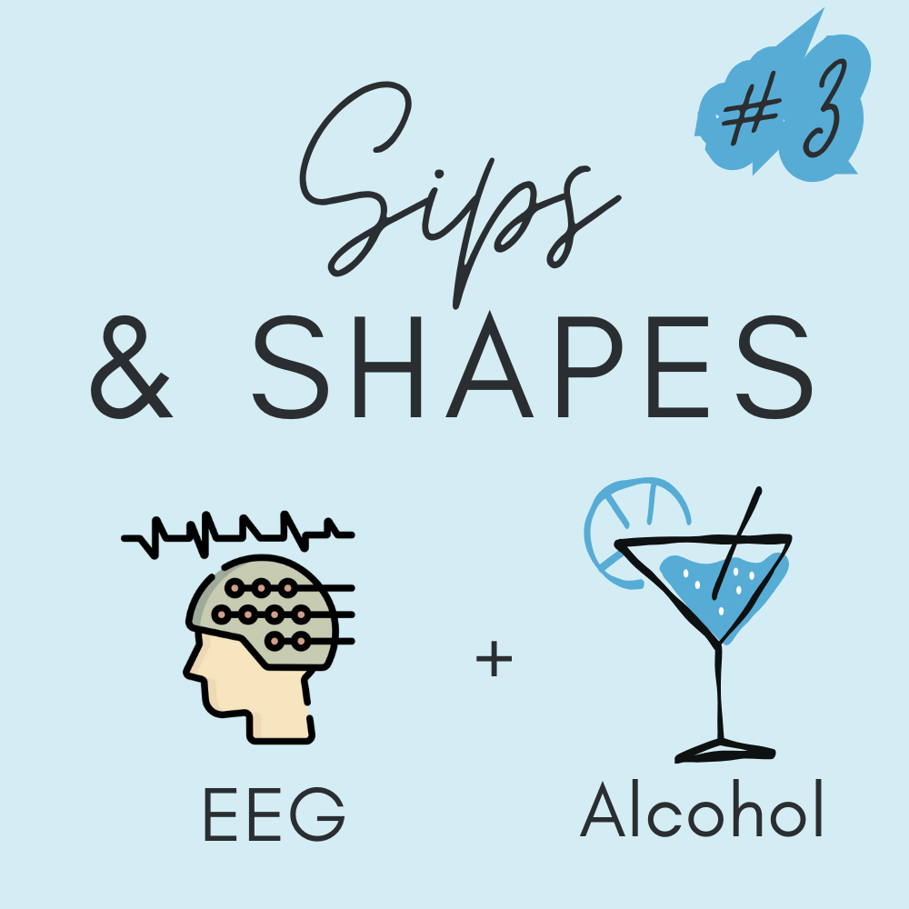
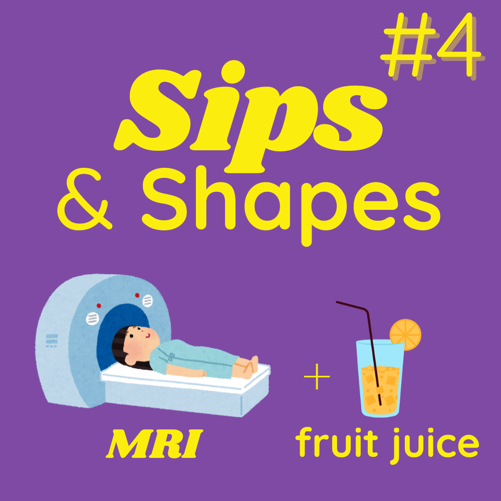
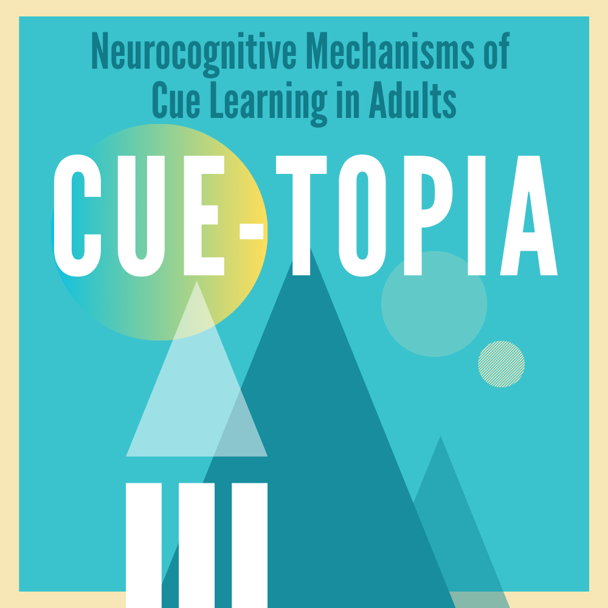
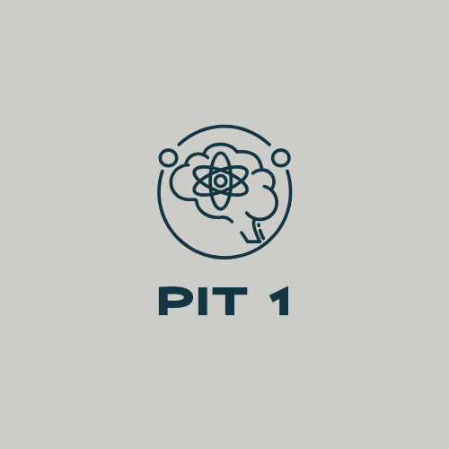

Our lab is currently recruiting participants to help us study how the brain supports attention, emotion, and learning & memory. These mental processes shape how we interact with the world—and understanding them may provide insight into why some people are more vulnerable than others to developing substance use problems.
We recruit participants across a range of alcohol consumption and other substance use behavior patterns, including persons who don't drink alcohol or use any addictive substances. Some of our studies focus on young adults because there is elevated risk for alcohol/substance use in this age range, while others examine a wider age range. Studies typically involve behavioral tasks, questionnaires, and non-invasive recording of brain activity.
Click below to learn more about studies currently recruiting and how to get involved. Each page includes a brief overview and a link to an eligibility screener. Feel free to take as many screeners as you'd like to see which studies you qualify for. All of our studies offer compensation for your time and participation, with details provided on each study’s information page.
Want to know more about what we’ve studied in the past? Check out our archive of completed studies to see how participants have contributed to advancing brain science.



